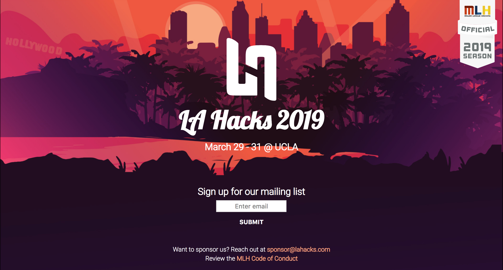
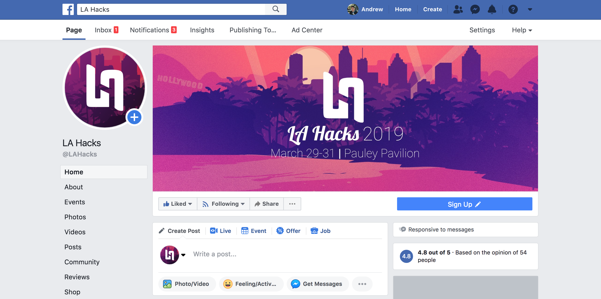

LA Hacks is one of the biggest hackathons in the US, with 1,000+ hackers every year, thus making marketing a vital part of the hackathon's success. The year starts in the fall, with the event taking place in the Spring.
I am one of the two marketing team members, joining a team of a total of 30+ to make the event a success. I work closely with the design team to implement various different designs into our social media marketing, while working with Hacker Operations, sponsorships, and tech to publicize whatever they need.
Marketing for LA Hacks has a social media marketing focus, with not much else going on. This year, we hoped to go above and beyond and grow the Instagram so that it is a lot bigger than it currently is by posting consistenly and publicizing its existence.
Further, we plan to release various videos to post on our social media accounts to promote the event. We also created a Medium blog to keep us relevant throughout the year, while doing hard advertisement pushes after applications come out and when the hackathon is just around the corner.
Because fundraising is especially a problem this year, we were also tasked to market a Spark campaign, which is an internal UCLA fundraising campaign where many people can donate to the cause. We further promoted this fundraising campaign over our social media accounts.
